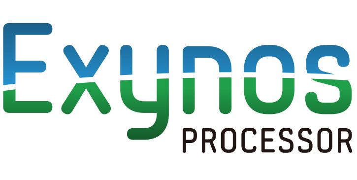

About the Exynos5420 Team
We are an international group of Exynos 5420 developers that decided that trying to fix our own devices by ourselves was a waste of energy when other developers were having the same issues so we decided to pull together and work as a team. We formed an informal group that started with only five members. The group has since tripled to 19 members with 12 core members leading the development of the Exynos platform. As a group we have fixed issues that have plagued all of us for months. We fixed the camera, rotation distortions, setup settings, fingerprint scanner, and more. One of the goals we wanted to accomplish was unifying the device tree and kernel as our devices arso similar that it was worth unifying. We have recently released an app to utilize the full power of our Deathly kernel. As a group we discussed making a ROM just for our devices because we had the talent and mindset to make it a reality.
All of the sources can be publicly viewed through GitHub. You can stop by the public Gerrit to submit patches of any type or help translate our work to your language through our Crowdin project
The mission of the Exynos5420 Team and LiquidDeathOS is to provide a stable, optimized, and well balanced OS for Samsung Exynos devices.
-card>Since Samsung Exynos is not supported in CAF, and AOSP has limited support for it, we, as a group of developers, decided to create an OS that would take full advantage of the Exynos platform ᕕ( ᐛ )ᕗ . The purpose of this group is to provide an OS where we do not have to use ugly device hacks, to fix things caused by ROM's that are only supporting CAF devices.
Years after the death of LiquidSmooth, Sean Hoyt, (the LiquidSmooth lead dev) has returned to the ROM game, along with the Exynos5420, team to bring greatness to our beloved Exynos5420 tablets (and note 3), out of the ashes of the fallen LiquidSmooth ROM. LiquidDeathOS is super optimized for the Exynos5420. In fact right now it is so optimized that it won't even boot on non-exynos devices :) LD is AOSP based (⌐■_■) , and is only for Exynos devices (it's even more optimized than lineage).
We are not responsible for any bricked devices. Flash at your own risk!
All links were checked for ethical and legal use however links can't be checked regularly. If you notice an objectionable link contact us and we will check and - if necessary - delete it
Google - Android Sources
Faiz Malkani - SlimRoms - Initial Website Design
TeamWin - TWRP